🚌 Servicios del Metropolitano
El Metropolitano de Lima cuenta con diversos servicios diseñados para facilitar el traslado de miles de pasajeros cada día. Conoce las rutas expresos, servicios especiales y opciones disponibles para optimizar tu viaje.
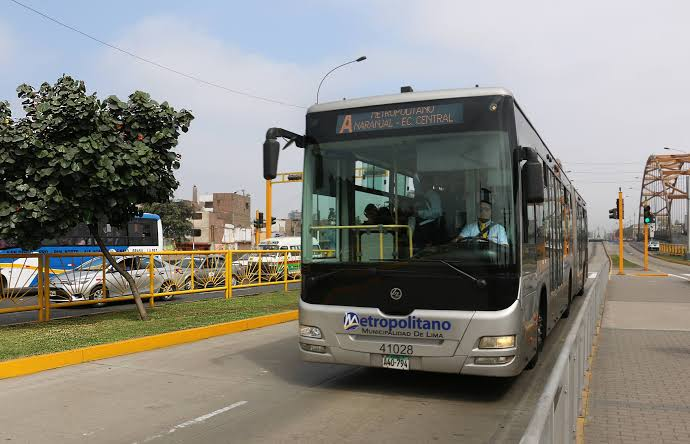
🚍 Regular A
Servicio regular que concecta diferentes estaciones del Metropolitano de Lima.

🚍 Regular B
Servicio regular que concecta diferentes estaciones del Metropolitano de Lima
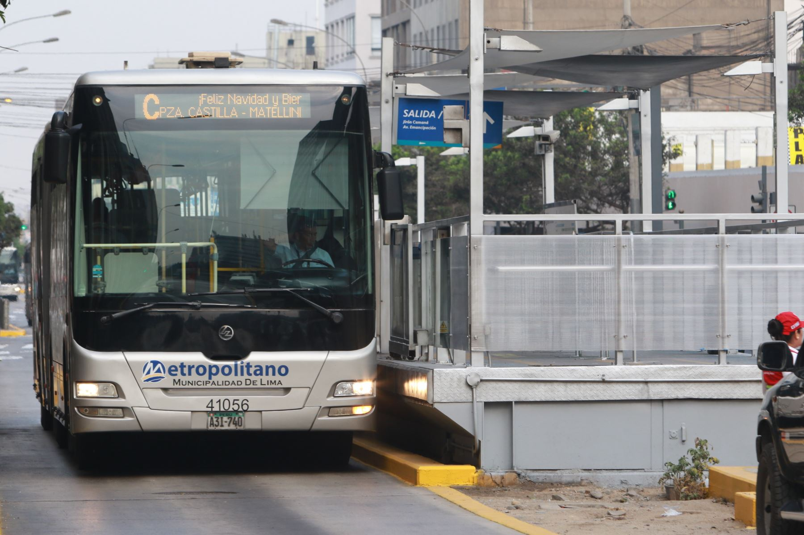
🚌 Regular C
Servicio regular que conecta diferentes estaciones del Metropolitano de Lima.

🚌 Regular D
Servicio regular que conecta diferentes estaciones del Metropolitano de Lima.
🚍 Expresos del Metropolitano
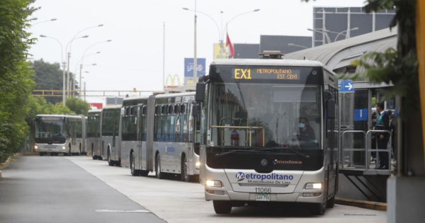
🚍 Expreso 1
Conecta Central con Matellini de manera rápida, realizando paradas en estaciones principales.
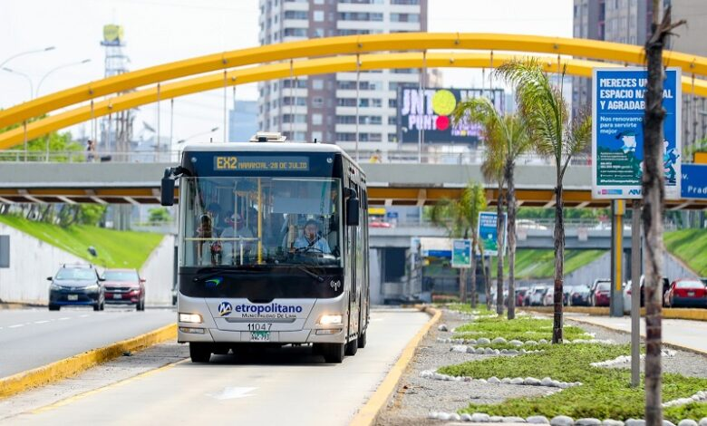
🚍 Expreso 2
Servicio expreso que conecta diferentes estaciones del Metropolitano.
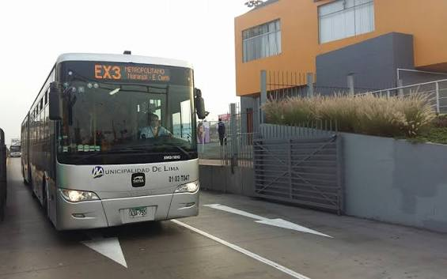
🚌 Expreso 3
Servicio expreso que conecta diferentes estaciones del Metropolitano de Lima, permitiendo realizar el recorrido de manera más rápida.
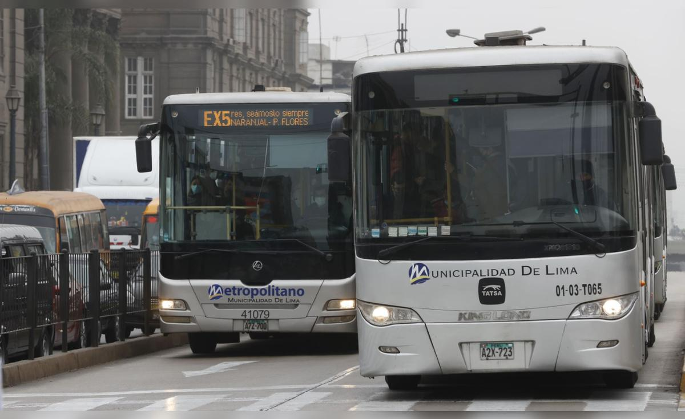
🚌 Expreso 5
Servicio expreso que conecta diferentes estaciones del Metropolitano de Lima, permitiendo realizar el recorrido de manera más rápida.
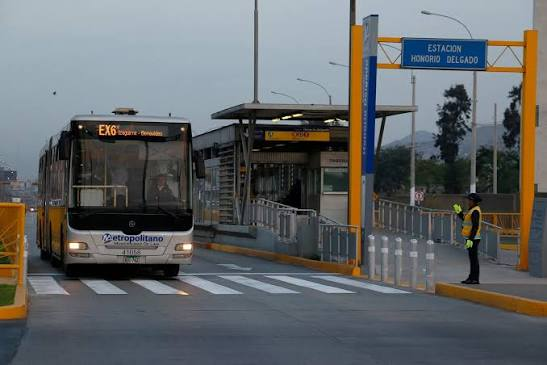
🚌 Expreso 6
Servicio expreso que conecta diferentes estaciones del Metropolitano de Lima, permitiendo realizar el recorrido de manera más rápida.
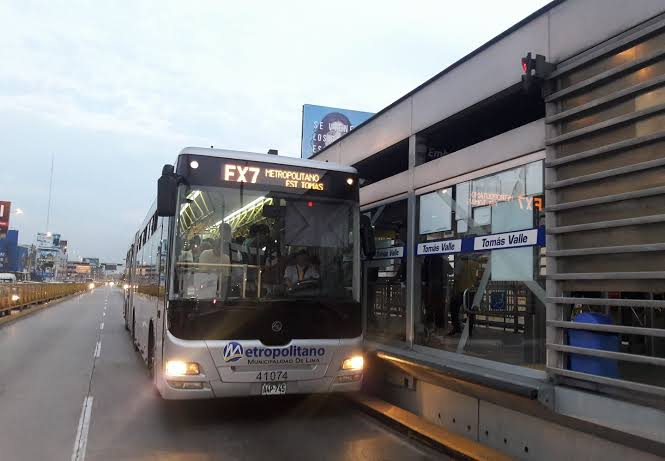
🚌 Expreso 7
Servicio expreso que conecta diferentes estaciones del Metropolitano de Lima, permitiendo realizar el recorrido de manera más rápida.
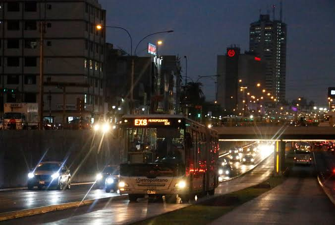
🚌 Expreso 8
Servicio expreso que conecta diferentes estaciones del Metropolitano de Lima, permitiendo realizar el recorrido de manera más rápida.
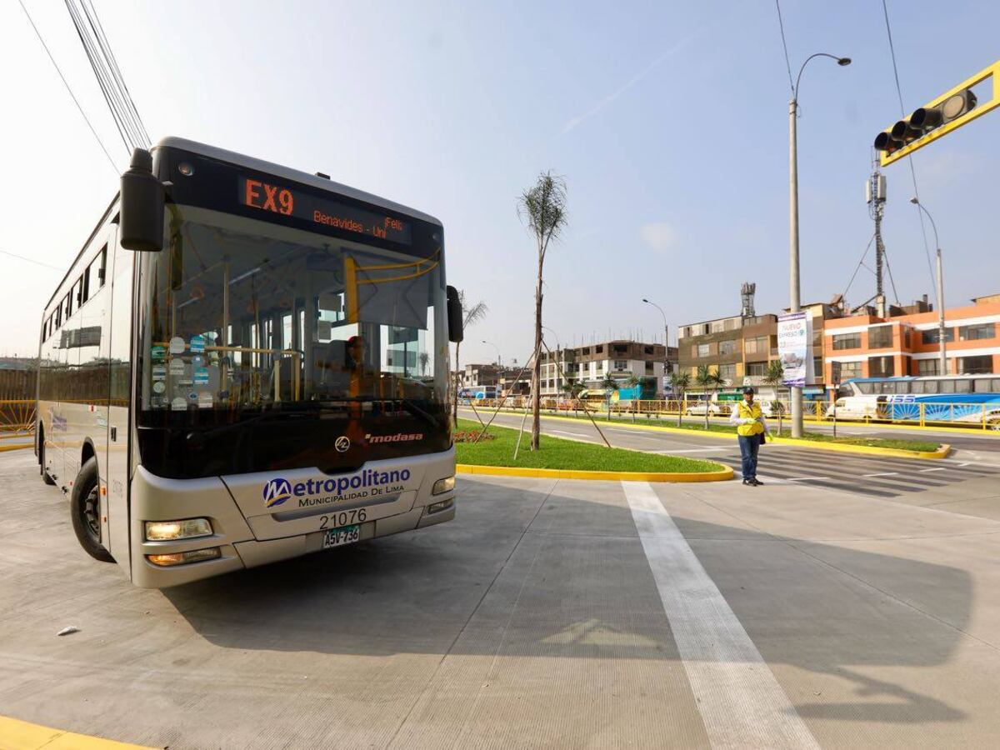
🚌 Expreso 9
Servicio expreso que conecta diferentes estaciones del Metropolitano de Lima, permitiendo realizar el recorrido de manera más rápida.
🚍 Nuevos Expresos del Metropolitano
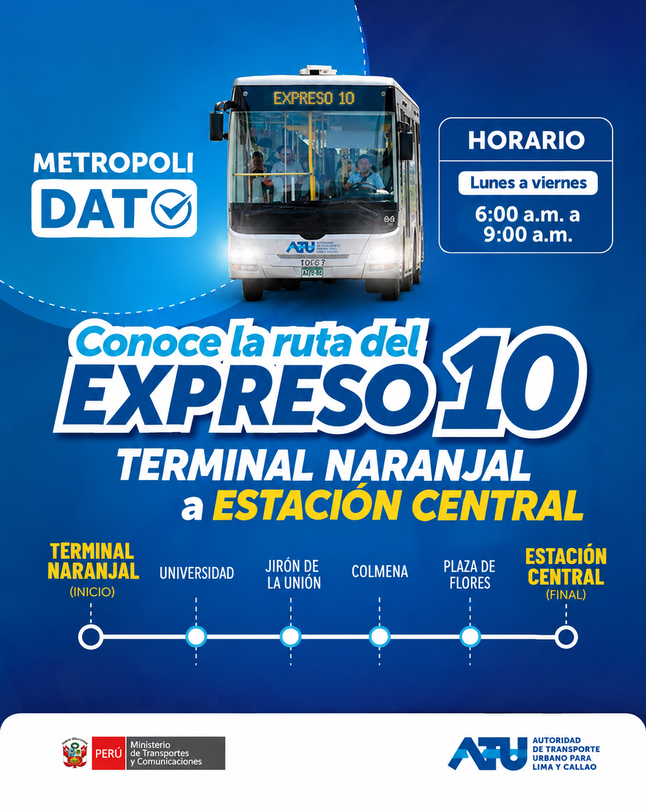
🚌 Expreso 10
Servicio expreso que conecta diferentes estaciones del Metropolitano de Lima, permitiendo realizar el recorrido de manera más rápida.
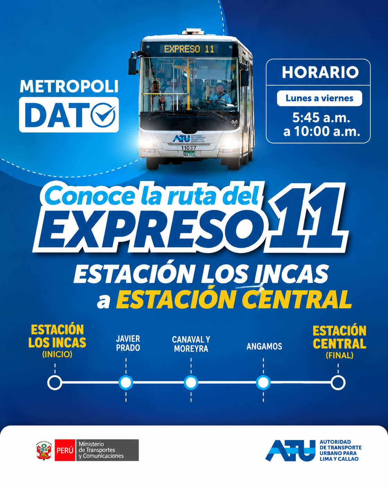
🚌 Expreso 11
Servicio expreso que conecta diferentes estaciones del Metropolitano de Lima, permitiendo realizar el recorrido de manera más rápida.
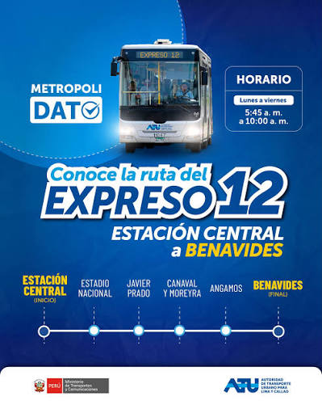
🚌 Expreso 12
Servicio expreso que conecta diferentes estaciones del Metropolitano de Lima, permitiendo realizar el recorrido de manera más rápida.
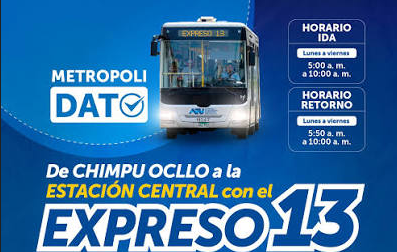
🚌 Expreso 13
Servicio expreso que conecta diferentes estaciones del Metropolitano de Lima, permitiendo realizar el recorrido de manera más rápida.
Servicios especiales del Metropolitano
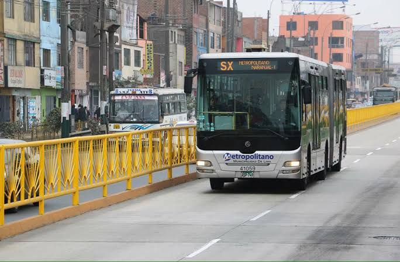
🚌 Súper Expreso
Servicio expreso que conecta diferentes estaciones del Metropolitano de Lima, permitiendo realizar el recorrido de manera más rápida.
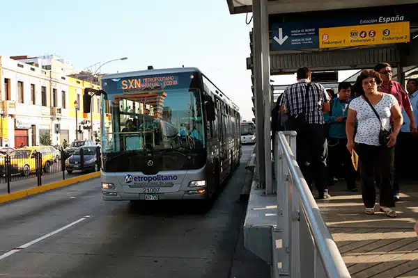
🚌 Súper Expreso Norte
Servicio expreso que conecta diferentes estaciones del Metropolitano de Lima, permitiendo realizar el recorrido de manera más rápida.
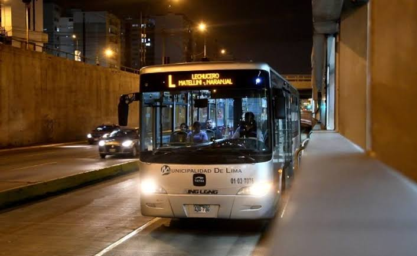
🚌 lechucero
Servicio expreso que conecta diferentes estaciones del Metropolitano de Lima, permitiendo realizar el recorrido de manera más rápida.